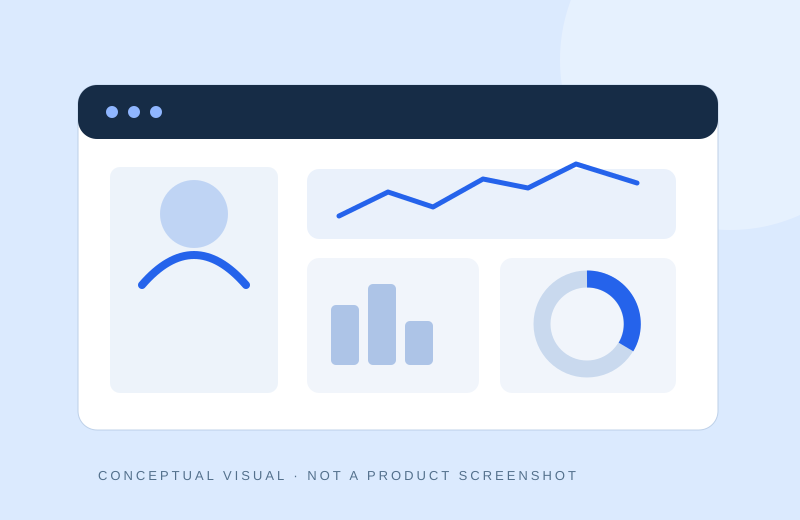
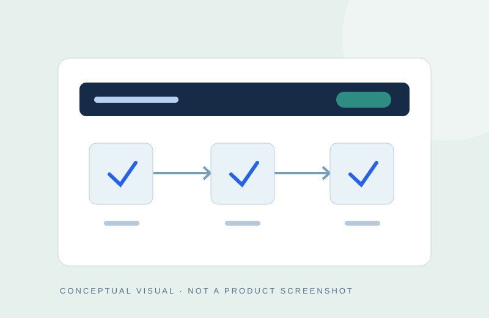

Business Analyst.
Thấu hiểu nghiệp vụ.
Tạo giá trị số.
Hơn 5 năm chuyển hóa nhu cầu nghiệp vụ phức tạp thành yêu cầu rõ ràng, quy trình hiệu quả và giải pháp số trong CRM doanh nghiệp, Loyalty và Chuyển đổi số.
The Freedom to Become. — Grow with purpose. Live with heart.
Giá trị tôi mang đến.
Dự án thực tế. Bài toán thực tế.
Một số lĩnh vực và bài toán tôi đã tham gia, từ vận hành khách hàng đến hệ sinh thái loyalty.

CRM Doanh nghiệp & Chuyển đổi số
Dịch vụ khách hàng, booking, hội viên và quy trình liên phòng ban.
Xem kinh nghiệm ↗Hình minh họa ý tưởng · Không phải ảnh chụp hệ thống thực tế
Nova Membership 2.0
Phân tích yêu cầu loyalty liên BU: khách sạn, F&B, thể thao và giải trí.
Xem kinh nghiệm ↗Hình minh họa ý tưởng · Không phải ảnh chụp hệ thống thực tế
Quản trị số & Cải tiến quy trình
Quy trình biểu quyết số với thời gian xử lý ghi nhận giảm từ 4 giờ còn 1 giờ.
Xem kinh nghiệm ↗Hình minh họa ý tưởng · Không phải ảnh chụp hệ thống thực tếGiá trị vượt ra ngoài tài liệu.
Một số kết quả từ các dự án đã tham gia; số liệu phản ánh kết quả triển khai của tập thể trong bối cảnh từng dự án.
Từ vấn đề chưa rõ đến giải pháp thống nhất.
Cách tôi tiếp cận phân tích nghiệp vụ trong suốt vòng đời triển khai sản phẩm.
Trưởng thành qua nhiều lĩnh vực và góc nhìn.
Từ chính phủ điện tử và kiểm thử đến CRM doanh nghiệp và loyalty đa ngành, mỗi giai đoạn giúp tôi kết nối bối cảnh kinh doanh với quá trình triển khai tốt hơn.
Xem kinh nghiệm đầy đủ ↗Tôi không chỉ là chức danh công việc.
Tôi yêu thiên nhiên, thích khám phá những vùng đất mới, những nền văn hóa khác nhau và các cuộc trò chuyện có ý nghĩa. Ngoài công việc, tôi trân trọng sự tò mò, lòng nhân ái, gia đình và cơ hội tiếp tục trưởng thành.
“Trưởng thành có định hướng. Sống bằng sự tử tế.”Tìm hiểu về tôi ↗
Một hành trình nhiều ngã rẽ. Một lý do để tiếp tục.
Một học bổng đã mở ra cánh cửa công nghệ. Những công việc, thành phố và trải nghiệm khác nhau giúp tôi hiểu điều quan trọng: phát triển có định hướng, tạo ra cơ hội và chăm lo cho những người mình yêu thương.
Đọc hành trình của tôi ↗Bạn đang tìm một Business Analyst có thể kết nối nghiệp vụ và công nghệ?
Khám phá dự án, tải CV hoặc liên hệ để trao đổi về cơ hội nghề nghiệp, hợp tác hay những mối quan tâm chung.